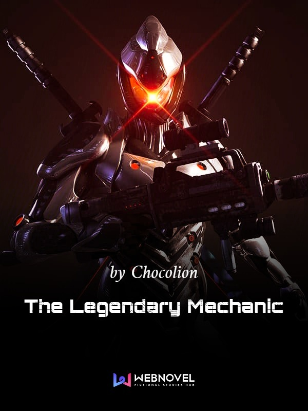
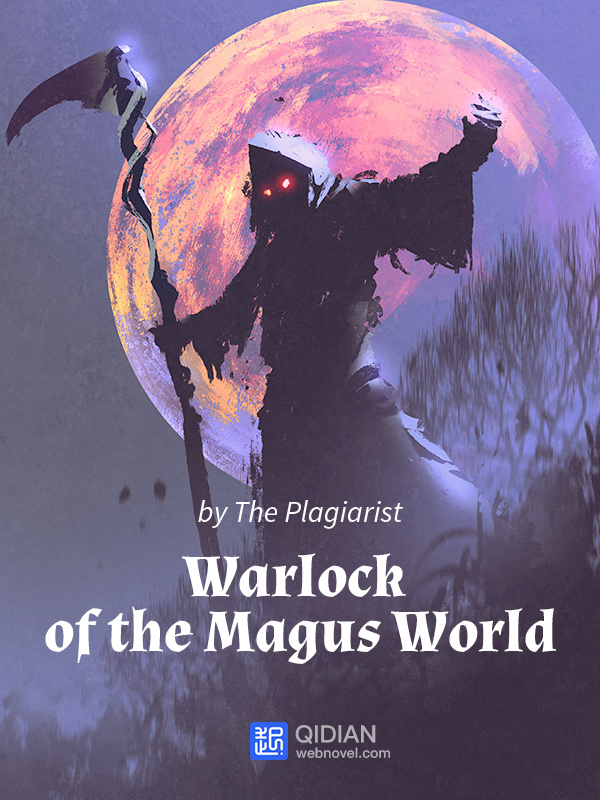

Reverend Insanity / Master of Gu
Author: Gu Zhen Ren
Official Website
Description
Humans are the spirit of all living beings, Gu are the essence of heaven and earth.
With his three views* unrighteous, a demon is reborn.
Former days are but an old dream, an identical name is made anew.
The story of a time traveller who keeps on being reborn.
A unique world that nurtures, refines, and uses Gu.
Spring Autumn Cicada, Moonlight Gu, Liquor Worm, Great Qi Golden Light Worm, Slender Black Hair Gu, Hope Gu…
And a great demon of the world that acts as his heart pleases!
A story of a villain, Fang Yuan who was reborn 500 years into the past with the Spring Autumn Cicada he
painstakingly refined. With his profound wisdom, battle and life experiences, he seeks to overcome his foes with
skill and wit! Ruthless and amoral, he has no need to hold back as he pursues his ultimate goals. In a world of
cruelty where one cultivates using *Gu – magical creatures of the world – Fang Yuan must rise up above all with
his own power.
Notes :
*Gu is a legendary venomous insect, often used in black magic practices. It can take on the form of several
insects, usually snakes, crickets, worms etc.
*Three views = one’s world view, values of worth, and philosophy on life.

Lord of the Mysteries
Author: Cuttlefish That Loves Diving
Official Website
Description
With the rising tide of steam power and machinery, who can come close to being a Beyonder? Shrouded in the fog
of history and darkness, who or what is the lurking evil that murmurs into our ears?
Waking up to be faced with a string of mysteries, Zhou Mingrui finds himself reincarnated as Klein Moretti in an
alternate Victorian era world where he sees a world filled with machinery, cannons, dreadnoughts, airships,
difference machines, as well as Potions, Divination, Hexes, Tarot Cards, Sealed Artifacts…
The Light continues to shine but mystery has never gone far. Follow Klein as he finds himself entangled with the
Churches of the world—both orthodox and unorthodox—while he slowly develops newfound powers thanks to the
Beyonder potions.
Like the corresponding tarot card, The Fool, which is numbered 0—a number of unlimited potential—this is the
legend of “The Fool”.

Soul Of Negary
Author: Xu Ming
Official Website
Description
Heed my call! O’ Dragon of Eternal Sin, the Progressive Disaster, the Forerunner, the Land of Eternal Peace, the
Flames of Soul Burning, He Who Owns The Deep Soul, the Sound of Origin, the First Cause of All Things, the
Principle of Circles… o’ great Negary, your servant calls for your return!
Within the darkness, someone was harmoniously chanting, he was smiling, as he knew he would finally become one
with his God.
And all of this, came from the remnant soul that was deceived to travelling to a different world and had his
Protagonist Aura stolen.

The Legendary Mechanic
Author:Qi Peijia
Official Website
Description
What do you do when you wake up and find yourself inside the very game that you love?
What do you do when you realize you that you have not only become an NPC – you have even been thrown back in
time to before the game even launched!
What will happen when our protagonist’s two realities coincide?
Han Xiao was a professional power leveler before his transmigration. Using his past life’s knowledge, Han Xiao
sweeps through the universe as he prepares for the arrival of the players. This is definitely not your typical
transmigration novel.

Warlock Of The Magus World
Author: The Plagiarist
Official Website
Description
When a futuristic scientist is transported into the body of a young man in a fantasy world, his curiosity and
desire for power push him to pursue magic. In a world without mercy, Leylin has no qualms about doing anything
if it means benefits. He is cold, ruthless and calculating, never forming attachments that could impede his
ultimate goal…
Honor? Who needs that… Hmmm… that guy seems too powerful for me to take on now… I better keep a low profile
for now.
You want me to help you? What do I get out of it? Nothing? Bye.
Hmm… that guy looks like he might cause me problems in the future. Better kill him before he becomes a problem…